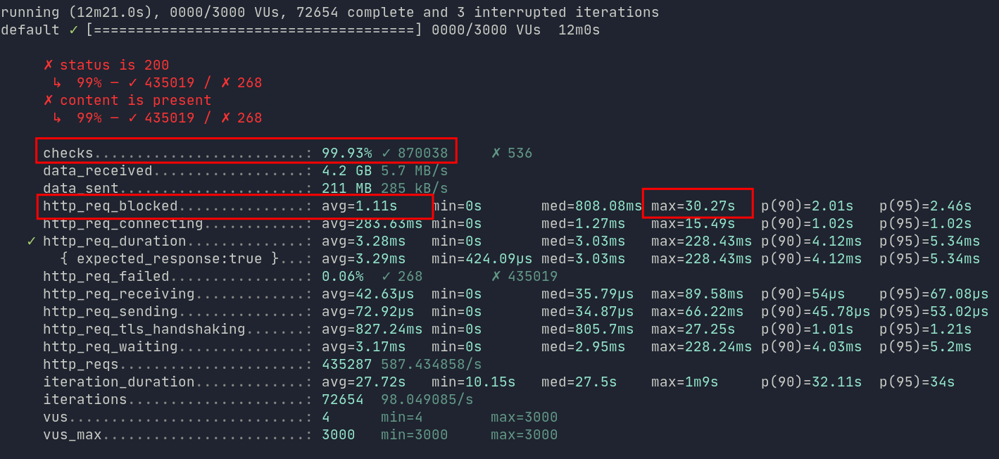
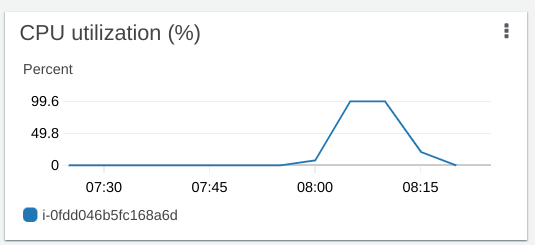
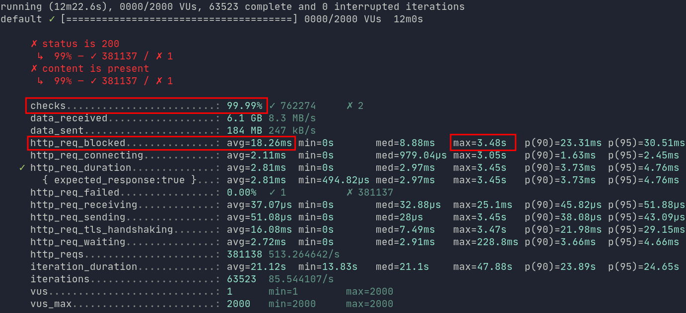
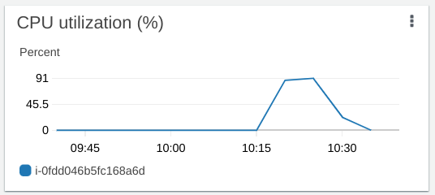
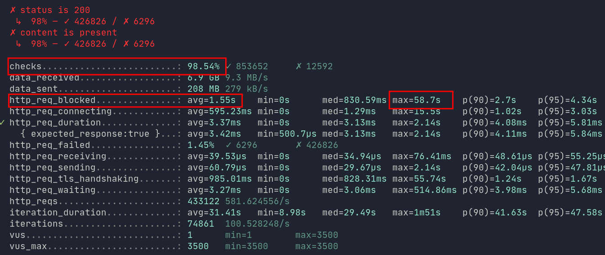

How many blog visitors can fit in an AWS free-tier EC2?
The goal of this blog post is to figure out how many concurrent visitors can my AWS free-tier blog handle.
I would also like to see how many requests per second that is 🤔
Tech stack
- aws free-tier EC2 instance of Ubuntu 20.04
- t2.micro (1vCPU, 1GB of RAM)
- Hugo to generate static blog posts
- NGINX to serve static blog posts
- k6 for load testing
K6 load test script
*) Goes to my blog’s post 3 times & sleeps for 3-5 sec every time
*) Goes to blog’s tags page & sleeps for 3-5 sec
*) Goes to about page & sleeps
*) Goes to RSS page & sleeps
// Click to open/close full source //
let response = http.get("https://akselallas.xyz/posts/first-blog-post/");
// check() returns false if any of the specified conditions fail
let checkRes = check(response, {
"status is 200": (r) => r.status === 200,
"content is present": (r) => r.body.indexOf("Freetier aws + nginx") !== -1,
});
sleep(Math.random() * 3 + 2)
let response2 = http.get("https://akselallas.xyz/posts/first-blog-post/");
// check() returns false if any of the specified conditions fail
let checkRes2 = check(response2, {
"status is 200": (r) => r.status === 200,
"content is present": (r) => r.body.indexOf("Freetier aws + nginx") !== -1,
});
sleep(Math.random() * 3 + 2)
let response3 = http.get("https://akselallas.xyz/posts/first-blog-post/");
// check() returns false if any of the specified conditions fail
let checkRes3 = check(response3, {
"status is 200": (r) => r.status === 200,
"content is present": (r) => r.body.indexOf("Freetier aws + nginx") !== -1,
});
sleep(Math.random() * 3 + 2)
let response4 = http.get("https://akselallas.xyz/tags/");
// check() returns false if any of the specified conditions fail
let checkRes4 = check(response4, {
"status is 200": (r) => r.status === 200,
"content is present": (r) => r.body.indexOf("Tags") !== -1,
});
sleep(Math.random() * 3 + 2)
let response5 = http.get("https://akselallas.xyz/about/");
// check() returns false if any of the specified conditions fail
let checkRes5 = check(response5, {
"status is 200": (r) => r.status === 200,
"content is present": (r) => r.body.indexOf("Software Architecture Enthusiast") !== -1,
});
sleep(Math.random() * 3 + 2)
let response6 = http.get("https://akselallas.xyz/index.xml");
// check() returns false if any of the specified conditions fail
let checkRes6 = check(response6, {
"status is 200": (r) => r.status === 200,
"content is present": (r) => r.body.indexOf("xmlns:atom") !== -1,
});
sleep(Math.random() * 3 + 2)
At first I ran the K6 script with 3000 users for 1 minute linearly ramping up to 3000 users, 10 minutes at 3000 and 1 minute ramping down
export let options = {
stages: [
// Linearly ramp up from 1 to 3000 VUs during first minute
{ target: 3000, duration: "1m" },
// Hold at 3000 VUs for the next 10 minutes
{ target: 3000, duration: "10m" },
// Linearly ramp down from 3000 to 0 VUs over the last minute
{ target: 0, duration: "1m" }
],
thresholds: {
// We want the 95th percentile of all HTTP request durations to be less than 500ms
"http_req_duration": ["p(95)<500"],
// Requests with the staticAsset tag should finish even faster
"check_failure_rate": [
// Global failure rate should be less than 1%
"rate<0.01",
// Abort the test early if it climbs over 5%
{ threshold: "rate<=0.05", abortOnFail: true },
],
},
};
Linux sockets
At ~1024 virtual users, I started getting this error in k6
Request failed: dial tcp 54.74.184.145:443: socket: too many open files"
At first I thought this is due to NGINX running out of file descriptors on my aws ubuntu server.
But for some reason, I already had 65536 as max open file descriptors set for www-data nginx worker thread.
Instead, I was running out of file descriptors on my own laptop, which I used to run the load test on.
To fix this i followed k6 suggestions
echo "ulimit -n 5000" >> ~/.bashrc
Figuring out the correct constraining factor
Then at ~1900 virtual users I started running into Request Failed dial: i/o timeout, which allegedly just means we are hitting some sort of constraining factor (CPU/IO/Network on either EC2 or the machine where we make the load test calls)
Since the max CPU utilization for Cloudwatch metrics I had seen for EC2 was at 3.78%, I assumed it was due to my 4g bandwidth limit ~1MB/s.
To fix this I moved my load testing script to a VM with more network bandwidth.
My assumption turned out to be correct. As I managed to reach 3000 virtual users without errors
“Harmless” NGINX overload errors
After a minute of 3000 users, I started getting NGINX errors:
could not allocate new session in SSL session shared cache "le_nginx_SSL" while SSL handshaking
Seems that this message is “harmless”
It won’t cause errors for visitors. Instead, affected returning visitors would take a small efficiency penalty from not having SSL session resumption.
3000 concurrent users results
During 3000 virtual users we had ~630 requests per second.
As we can see from the image below, we had an average waiting time of 1.11s, request duration of 3.28 ms and an error rate of 0.07% or 268 failed requests.
Note that the requests with errors do not end up in my nginx
error.log🤔
For 630 requests per second, I would call it an acceptable result, but note the max value for http_req_blocked is 30.27s.
http_req_blocked consists of time spent blocked (waiting for a free TCP connection slot) before initiating the request.
http_req_duration = http_req_sending + http_req_waiting + http_req_receiving
From AWS Cloudwatch we see that CPU hit 100% utilization, which is not ideal and causes failed responses in addition to very long responses for some calls.
2000 concurrent users results
Only a single failed request, waiting time of 18.26ms + request duration of 2.81ms
That is ~420 requests per second and a CPU peak utilization of 91%
Note that max http_req_blocked is only 3.48s :)
This is what good performance looks like. ❤
 3500 concurrent users results
Max http_req_blocked is 58.7s! 🥶
1.46% of all requests or 6300 requests failed. Rate is ~740 requests per second.
Definitely not good, but the server still survived atleast :)
Is this enough to survive a “hug of death”?
The best data on what type of traffic to expect from let’s say front page of Hackernews I have seen is from this blog post analyzing it.
Herman from the blog named ~70k hits per day. If we consider 12 hours a workday and calculate 72000/12 that’s 6000 - which is ~1.67 req/s.
If we consider a spike of traffic at peak interest and expect 10x or 100x more traffic, we get 16,7 or 167 req/s, which is way below all of our stress tests.
As a result, I can conclude that my setup is performant enough, since we saw that a free-tier instance can handle roughly ~420 requests per second. 😎